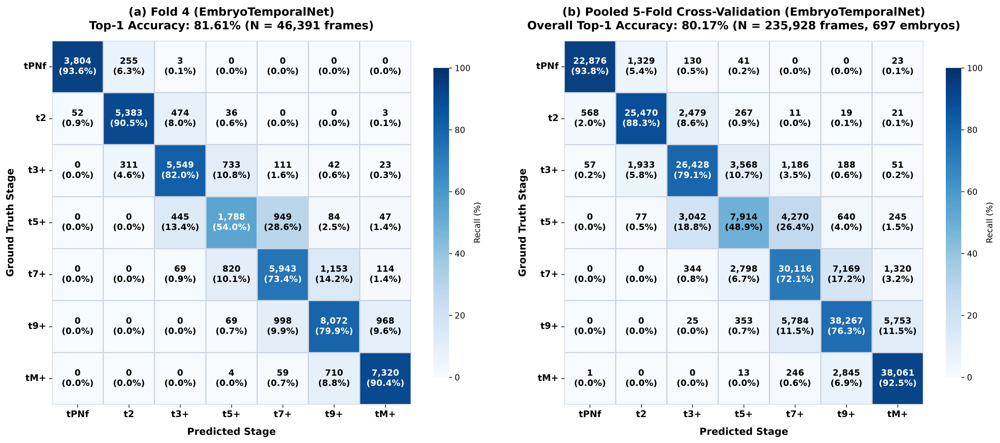

Authors & Affiliations
1. University of Information Technology,
Ho Chi Minh
City, Vietnam
2. Vietnam National University,
Ho Chi Minh City,
Vietnam
Abstract
Time-lapse embryo imaging in IVF yields rich morphokinetic records, yet stage interpretation still depends on manual review, which is slow, labor-intensive, and inconsistent across clinicians.
We propose a two-stage spatio-temporal deep learning pipeline combining MambaVisionMorph and EmbryoTemporalNet to automatically classify seven embryonic division stages from raw time-lapse video, replacing subjective screening with a reproducible workflow.
Trained and evaluated with strict embryo-level 5-fold stratified cross-validation (697 independent embryos, 235,928 annotated frames) to prevent patient data leakage, the system reaches Top-1 accuracy of 80.18% ± 1.30% and Top-3 accuracy of 98.30% ± 0.29%, with Macro F1 of 0.789, Weighted F1 of 0.800, and Cohen's Kappa (κ) of 0.765. Grad-CAM visualizations indicate that predictions track meaningful morphological cues rather than imaging noise.
Sample Analysis: CO119-8
469 time-lapse frames capturing complete embryo development from pronuclear stage through morula and blastocyst, with AI-predicted stage boundaries.

Embryo Development Viewer
469 frames · 7 morphokinetic stages
Current Stage
tPB2
Frame 5 – 24
Embryo Development Time-Lapse
Sample CO119-8 · 469 frames captured over ~5 days

5-Fold Pooled Confusion Matrix (N = 235,928)
Representative top Fold 4 (81.61%) and overall 5-fold cohort (80.17% pooled accuracy).
